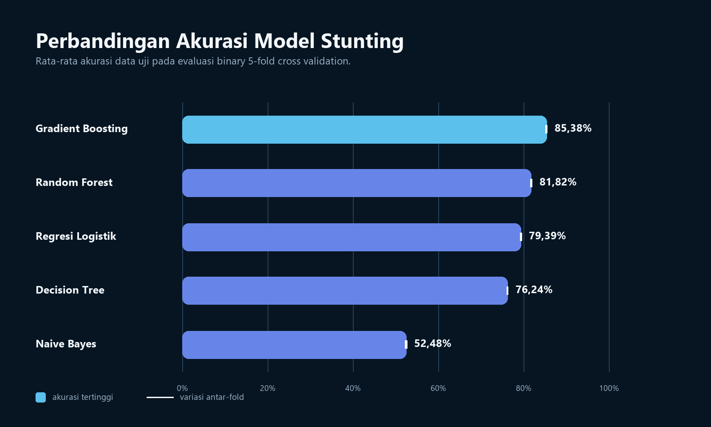

Audit & preprocessing
Memeriksa kualitas data, memilih fitur, melakukan encoding, scaling, dan validasi dataset akhir.
Semua Proyek/Stunting Classification
← Kembali ke semua proyekData Analytics · Machine Learning
Pipeline modular untuk mengaudit, membersihkan, memodelkan, mengevaluasi, dan melaporkan klasifikasi stunting menggunakan data SSGI 2024.

01 · Masalah
Data survei berskala besar memiliki struktur, tipe variabel, nilai hilang, dan distribusi kelas yang perlu diperiksa secara sistematis. Pipeline dibuat agar setiap perubahan dari data mentah menuju dataset analisis tercatat dan dapat diperiksa kembali.
02 · Kontribusi
Memeriksa kualitas data, memilih fitur, melakukan encoding, scaling, dan validasi dataset akhir.
Membandingkan lima algoritma pada skenario binary dan multiclass dengan proses evaluasi yang konsisten.
Menyusun metrik, visualisasi, interpretasi SHAP, serta materi hasil untuk mendukung persiapan riset.
03 · Keputusan teknis
Memetakan perubahan jumlah observasi dan fitur.
Menyiapkan data sesuai kebutuhan tiap algoritma.
Menerapkan SMOTE-NC hanya pada data latih di dalam evaluasi.
Menggunakan Stratified 5-Fold Cross Validation.
Membandingkan performa dan kontribusi fitur menggunakan SHAP.
04 · Hasil
Seluruh model dievaluasi pada skenario klasifikasi binary menggunakan Stratified 5-Fold Cross Validation. Penyajian semua model membantu memperlihatkan trade-off performa, bukan hanya menonjolkan satu hasil terbaik.
| Model | Metode evaluasi | Rata-rata akurasi |
|---|---|---|
| Gradient Boosting | Stratified 5-Fold CV | 85,38% |
| Random Forest | Stratified 5-Fold CV | 81,82% |
| Regresi Logistik | Stratified 5-Fold CV | 79,39% |
| Decision Tree | Stratified 5-Fold CV | 76,24% |
| Naive Bayes | Stratified 5-Fold CV | 52,48% |
Angka ini merupakan hasil evaluasi internal pada dataset proyek, bukan klaim performa pada populasi baru.
05 · Output
Dataset akhir berisi 284.776 observasi dan 152 fitur setelah audit, pembersihan, serta validasi struktur data.
Lima algoritma dinilai dengan pembagian fold dan prosedur evaluasi yang konsisten.
Visualisasi metrik dan SHAP disusun untuk membantu pembacaan performa serta kontribusi fitur.
06 · Teknologi